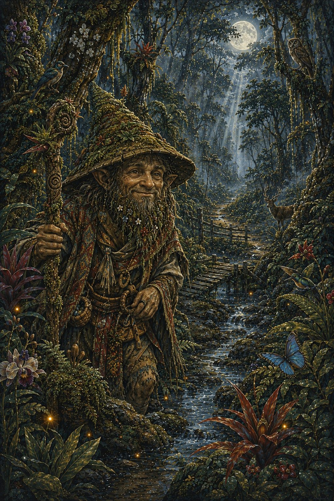
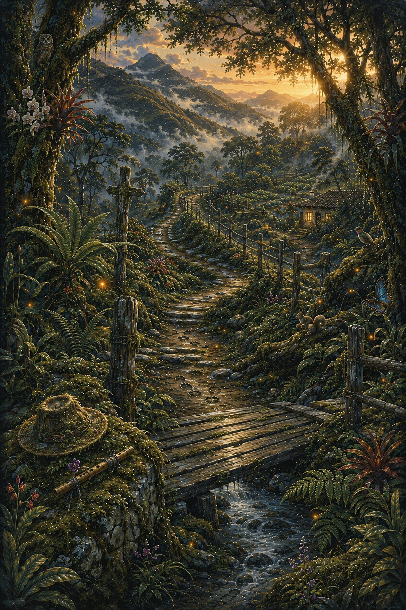
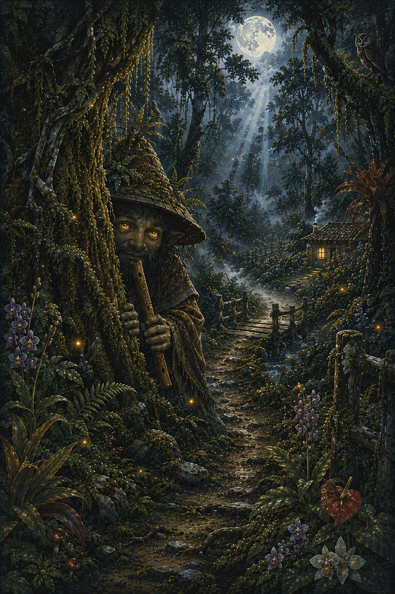
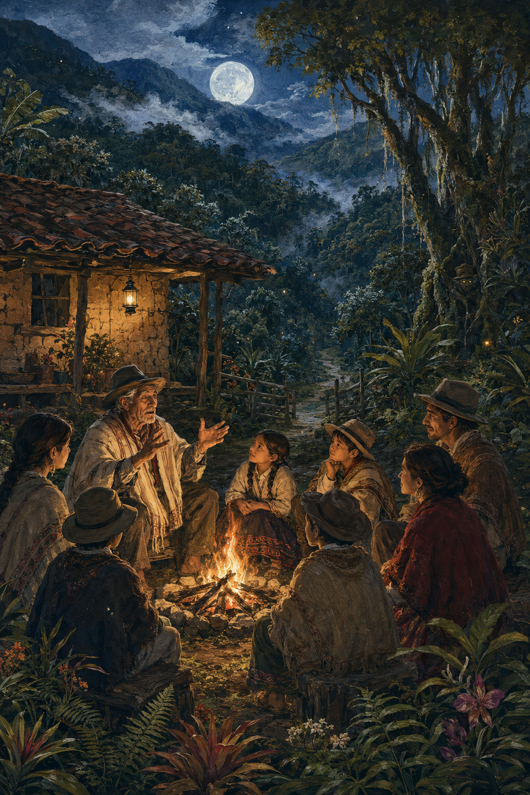
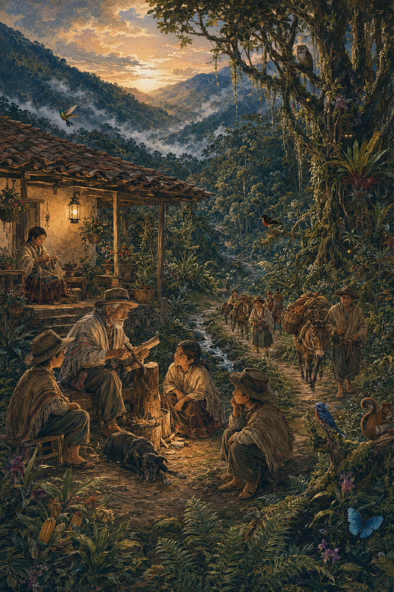
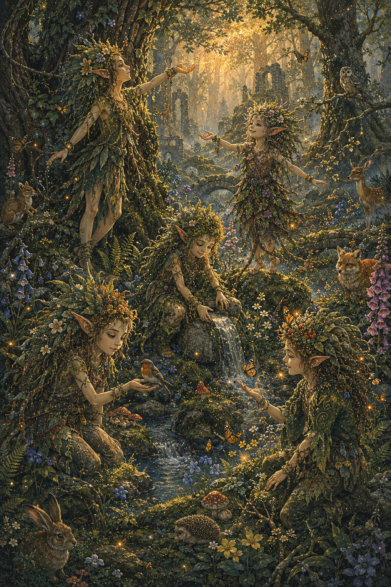
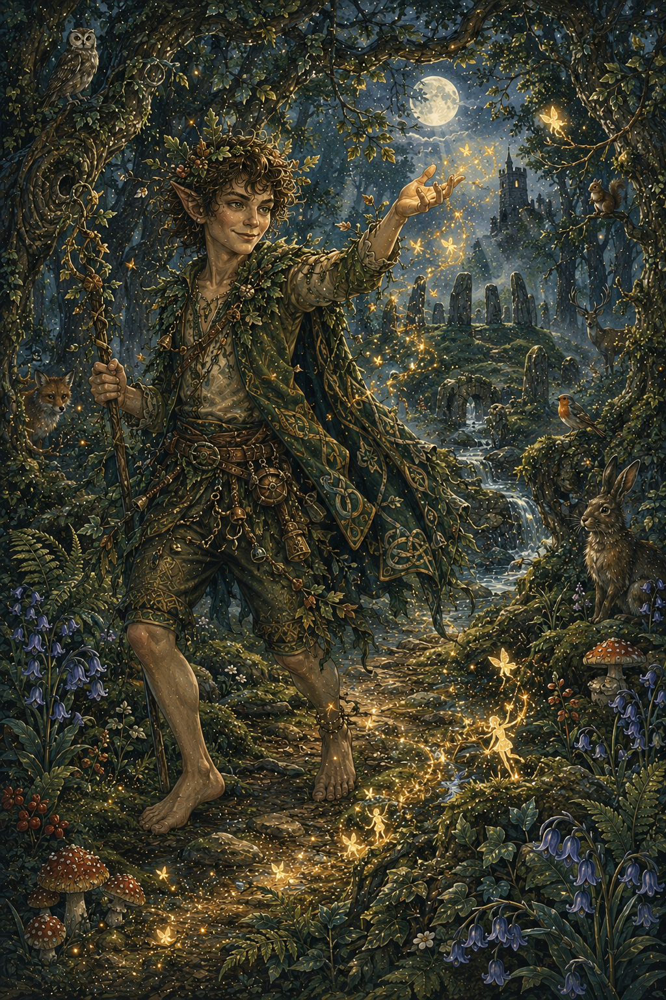

Leprechaun
Ser del folclore irlandés, pequeño y travieso, asociado a la suerte y el oro.
El Duende es una de las figuras más populares del folclore colombiano y latinoamericano. Se le describe como un ser pequeño, travieso y misterioso que habita en bosques, montañas y zonas rurales.
Su presencia está asociada a travesuras, extravíos de caminantes y protección de la naturaleza en algunos relatos.

En muchas versiones de la leyenda, el Duende es un ser juguetón que disfruta asustando a viajeros, escondiendo objetos o haciendo que las personas pierdan el camino.
Aunque puede parecer peligroso, en algunos relatos también protege los lugares naturales y castiga a quienes dañan el entorno.


En zonas rurales, muchos campesinos cuentan historias sobre niños o jóvenes que han sido confundidos por el Duende mientras caminaban solos por la montaña.
Se dice que aparece especialmente en la tarde o al anochecer, cuando la luz comienza a desaparecer.
El Duende ha sido utilizado tradicionalmente como una figura de advertencia para los niños, enseñando a no alejarse solos o desobedecer a los mayores.
Su imagen puede variar, pero siempre mantiene su carácter misterioso y su conexión con lo desconocido.

La leyenda del Duende está presente en casi todo el territorio colombiano y gran parte de América Latina, especialmente en zonas rurales y bosques.
Es una figura del folclore oral transmitida de generación en generación.


El Duende representa la conexión entre lo mágico y lo cotidiano dentro del folclore popular, funcionando como una figura simbólica del misterio de la naturaleza.
También cumple una función educativa dentro de la tradición oral, transmitiendo normas de comportamiento y respeto por el entorno.
Ser del folclore irlandés, pequeño y travieso, asociado a la suerte y el oro.

Espíritus de la naturaleza presentes en la mitología europea, ligados a bosques y magia.

Espíritu travieso de la mitología inglesa, conocido por engañar a los humanos.